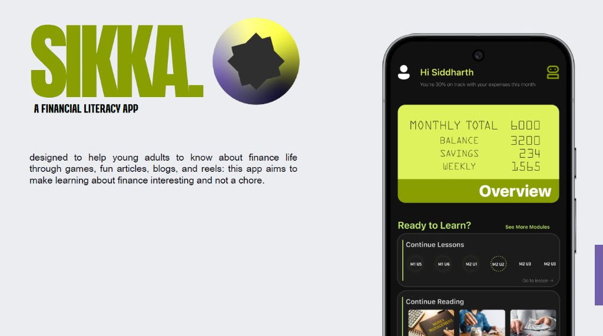
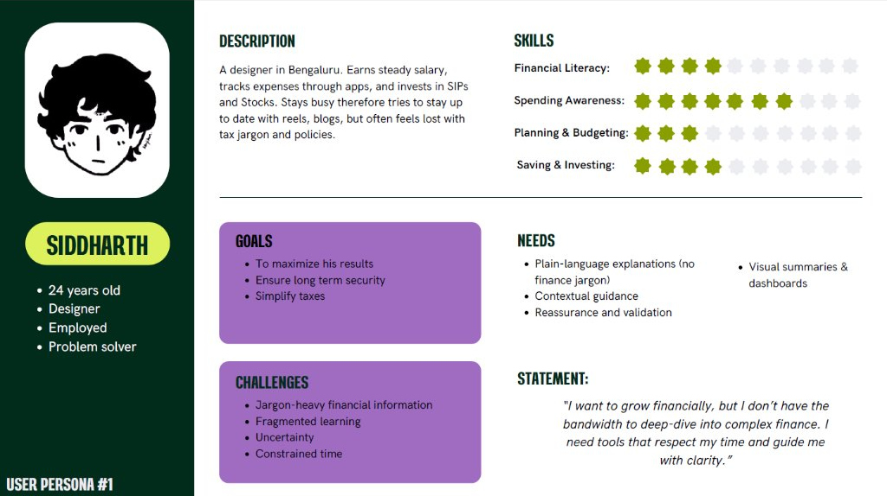
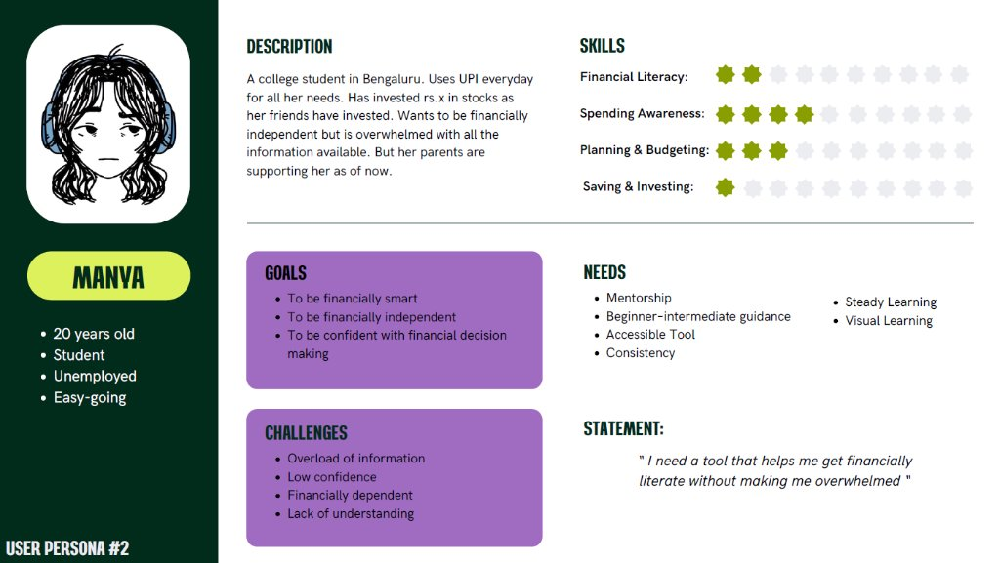
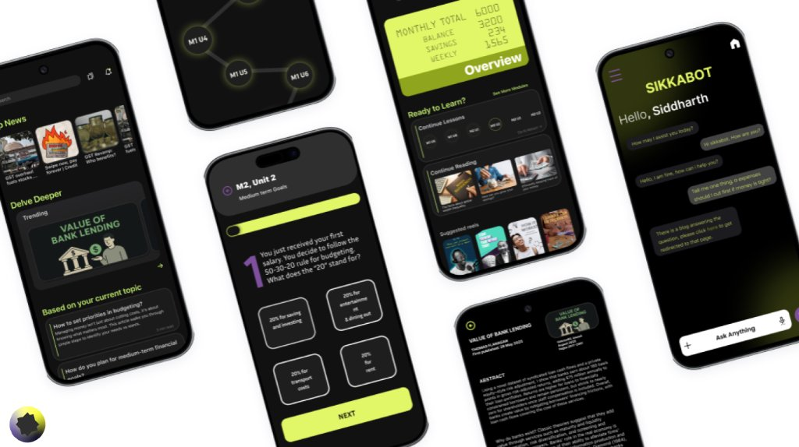
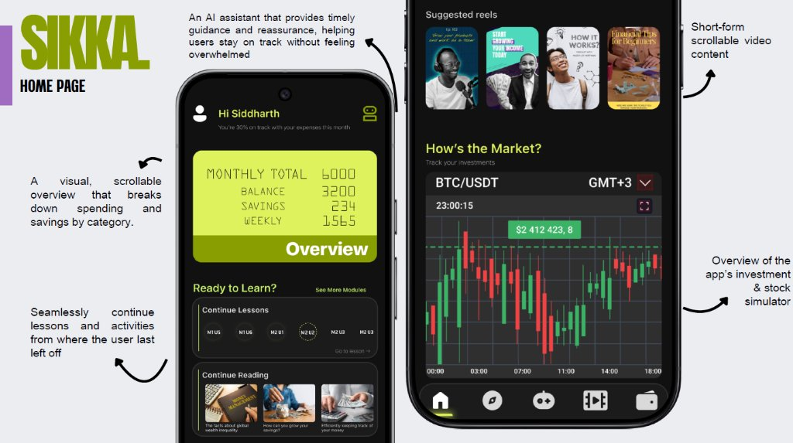
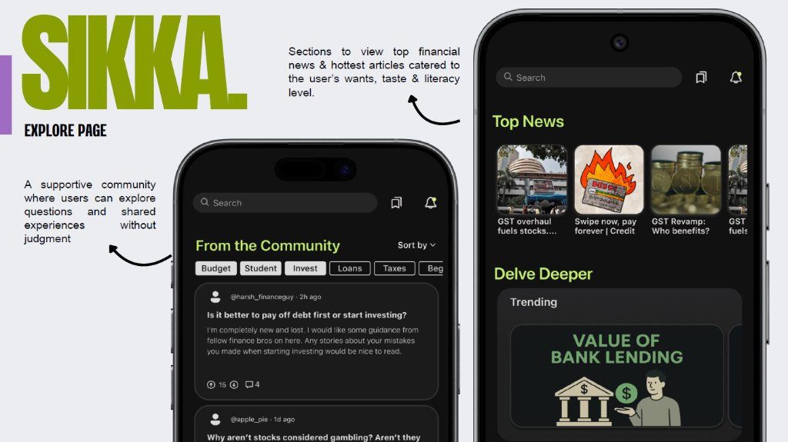
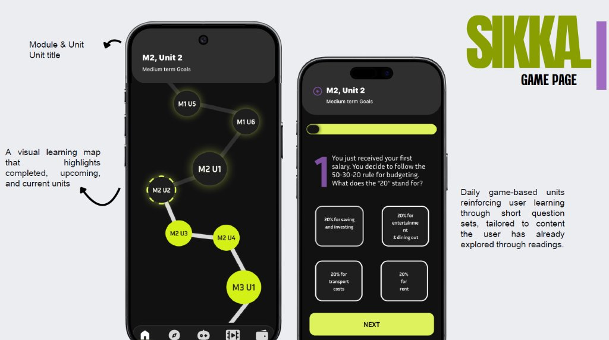
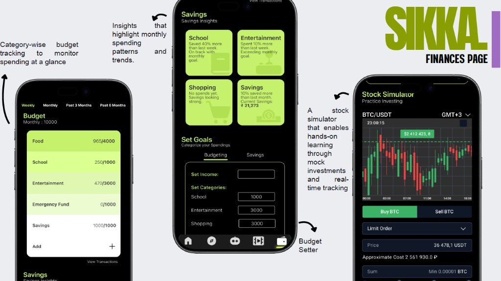
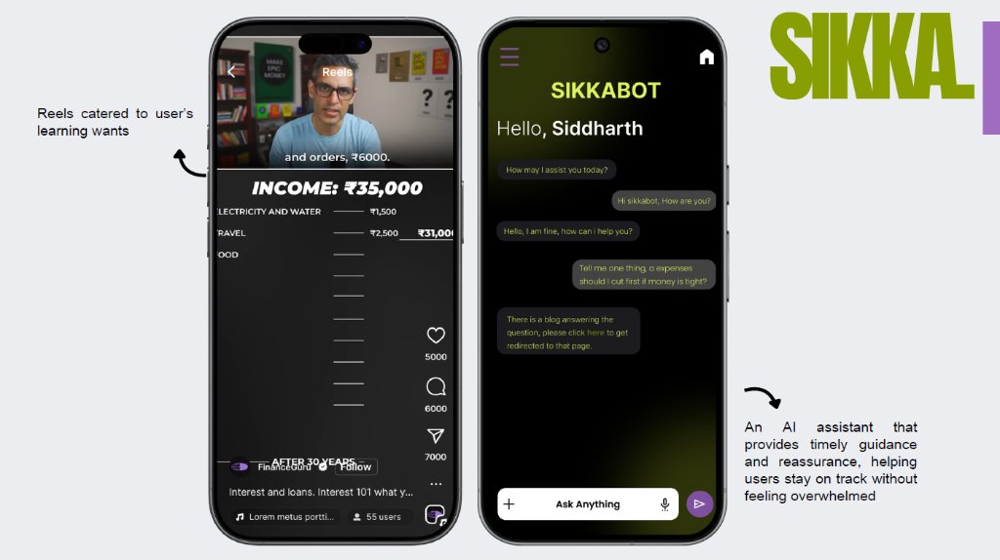

ISL Studio
A working Indian Sign Language practice platform combining webcam gesture recognition and interactive feedback for beginner ISL learners.

Sikka is a financial literacy app designed to make managing money feel more approachable, engaging and accessible. It brings together bite-sized learning, interactive lessons, articles, short-form videos and practical budgeting tools to help users build their financial knowledge and develop healthier money habits. By combining learning with everyday financial management, Sikka aims to make financial literacy something users can actively practise rather than just read about.
Young Adults today actively use digital payments and even experiment with investments like crypto or stocks, but their financial knowledge is often fragmented, shallow, and influenced by social media or peers. This makes them prone to overconfidence, risky decisions, and scams.
Existing financial education tends to be theoretical, text-heavy, or long-form, which doesn't fit into their daily routines or learning styles.
Mapping the key stakeholders, strategic potential and platform structure helped establish the direction for Sikka.


To begin shaping Sikka, we started by developing user personas to understand the different financial habits, levels of financial confidence, goals and challenges people experience. These personas helped us identify their needs, motivations and pain points, giving us a clearer direction for the features, learning experiences and tools the app should provide.


Sikka (meaning "coin" in Hindi) is a Financial Literacy App designed to help young adults to know about finance life, and be confident about it. Through games, fun articles, blogs, and reels, this app aims to make learning about finance interesting and not a chore.

The home page brings together personalized financial learning, quick activities and tools to help users get started.

A space to discover financial topics through engaging articles, blogs and bite-sized learning content.

Turns financial concepts into interactive, game-based experiences that make learning more engaging.

Helps users keep track of their money and build better budgeting habits through practical financial tools.

Reels make financial learning more accessible through short, digestible videos designed for quick consumption while SIKKABOT offers users a conversational way to explore financial questions and get guidance while using the app.

Sikka brings financial learning and everyday money management together in one accessible space, helping users build financial awareness through interactive lessons, engaging content and practical budgeting tools.
A working Indian Sign Language practice platform combining webcam gesture recognition and interactive feedback for beginner ISL learners.

An interactive image-making tool exploring variable-based visuals, creative experimentation and flexible visual treatments.

A board game for 2–5 players that encourages people to get to know one another through questions, strategy and play.

This Vertical Farm Mobile Van business is designed to bridge the gap between locally grown, fresh produce and urban consumers, creating direct access between vertical farms and the community.

A podcast and companion platform proposing small, intentional changes as an alternative to the pressure of instant self-improvement.